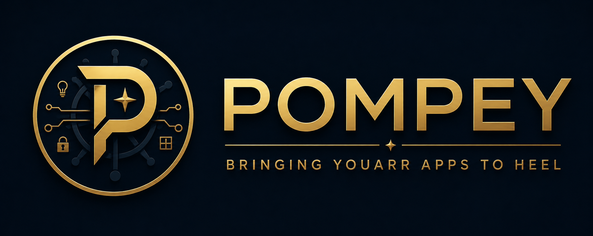

Starting Pompey…
Open Pompey from the Home Assistant sidebar.
Troubleshooting
VPN
Connected
Download
—
0 B received
Upload
—
0 B sent
Last two minutes
Pompey
Release notes ↗Application updates arrive together through tested Pompey releases.
Request workflow
Follow missing media through search, download and import. Manage requests in Seerr.
Download preferences
Quality and storage
Choose Default, Max, Anime or Anything per request in Seerr. Arr handles imports and upgrades; Pompey retains files it cannot safely identify or import.
Media folders, network access and advanced interfaces remain in Home Assistant’s app configuration.
Maintenance
Home Assistant Logs include Pompey and application output. Review logs for private information before sharing them.